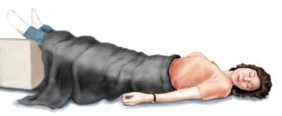

El Shock
Este se presenta cuando el trabajo cardiaco es insuficiente para llenar el espacio vascular con sangre a presión suficiente y proporcionar a los órganos y tejidos un flujo adecuado de sangre.
Cuando una persona sufre un accidente grave por lo general corre el riesgo de caer en Shock, y sus funciones vitales se alteran bruscamente, se puede presentar en accidentes de cualquier tipo donde se involucren condiciones como: hemorragias, fracturas, heridas por bala, quemaduras, intoxicaciones, etc.
Hay ciertos factores que pueden aumentar el riesgo de caer en shock, como la edad avanzada, desnutrición, o dolores muy fuertes.
La gravedad del shock depende de muchos factores y de la respuesta corporal de cada individuo; puede ir desde una sensación de debilidad hasta el colapso total.
El shock es un síndrome progresivo que pasa a través de tres estados:
Síntomas
- Palidez en labios, uñas y piel en general.- Piel fría y sudorosa; a menudo hay gotas de sudor sobre la frente.
- Pupilas dilatadas
- Sudoración
- Náuseas
- Vómitos
- Pulso rápido y débil
- Respiración superficial y agitada
- Mucosidad pálida
- Cianosis, color azulado en la piel
- La víctima puede estar intranquila, ansiosa, semiconsciente o inconsciente.
Shock compensatorio
Durante este estado temprano el cuerpo lucha por mantener todas las funciones normales.
Shock progresivo
Se presenta cuando los mecanismos compensatorios del cuerpo fallan y la función normal no puede ser mantenida. A partir de este momento la atención médica es urgente.
Shock irreversible
Si el shock progresa hasta el punto en que las células en los órganos vitales empiezan a morir por la inadecuada inyección intraarterial de líquidos.
Aún en el caso de que el shock pudiera ser tratado y revertido, el daño a los órganos vitales no puede ser reparado y el organismo eventualmente moriría.
Que hacer en caso de un Shock
1 Coloca a la víctima en posición horizontal y los pies levantados no más de 45° (Posición de Trendelenburg)
2 Afloja todo tipo de prenda u objeto que pueda obstruir la respiración y la circulación sanguínea
3 Revisa que esté respirando. Cubre a la víctima con un cobertor para mantener una temperatura de 37°C.
4 Revisa que esté respirando. Cubre a la víctima con un cobertor para mantener una temperatura de 37°C.
5 Si la víctima esta sangrando (hemorragia), trata de detenerla aplicando primeros auxilios.
Si la víctima no esta respirando, ni tiene pulso, dale reanimación cardiopulmonar (RCP).
Procura llevar a la víctima lo más pronto posible a un servicio médico.